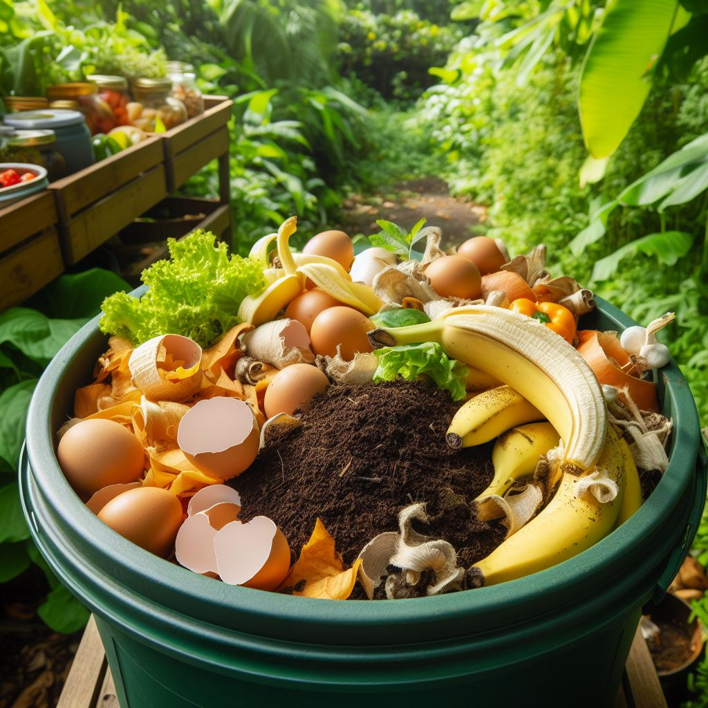
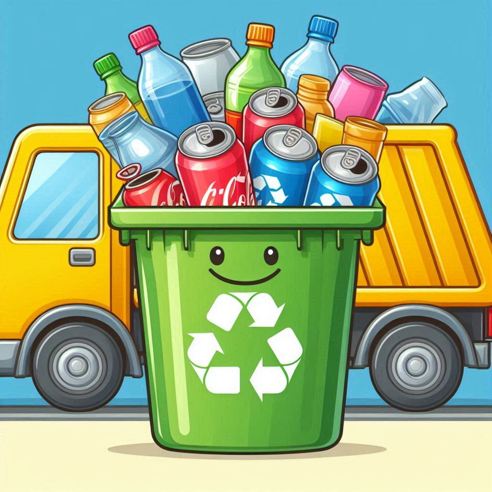
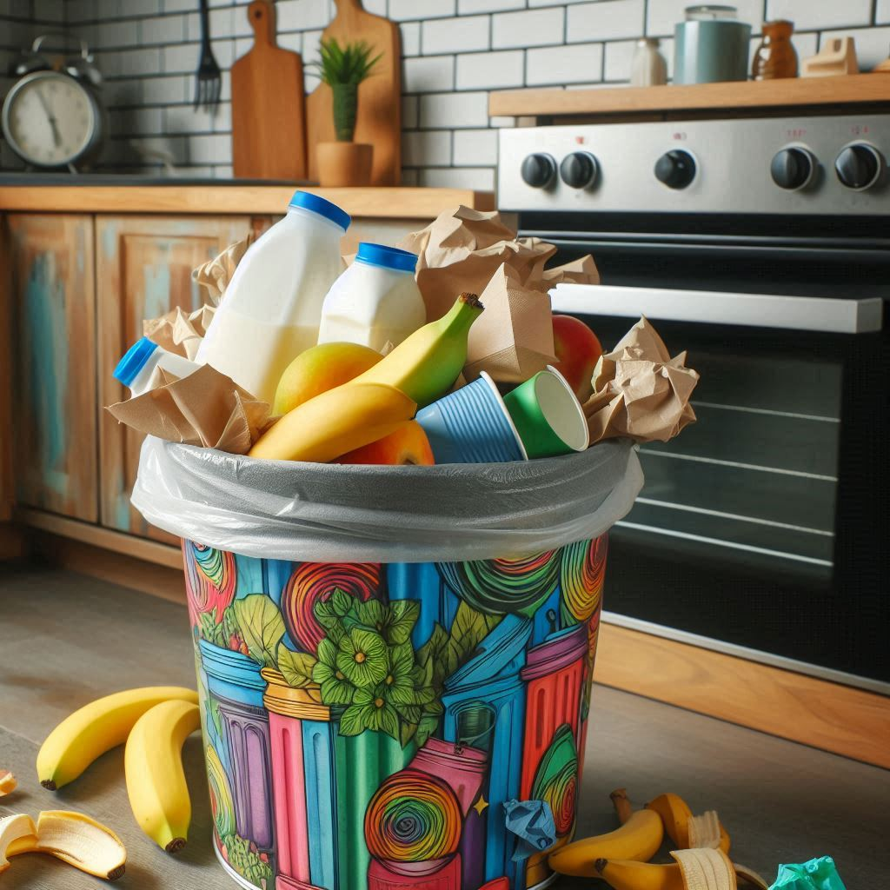
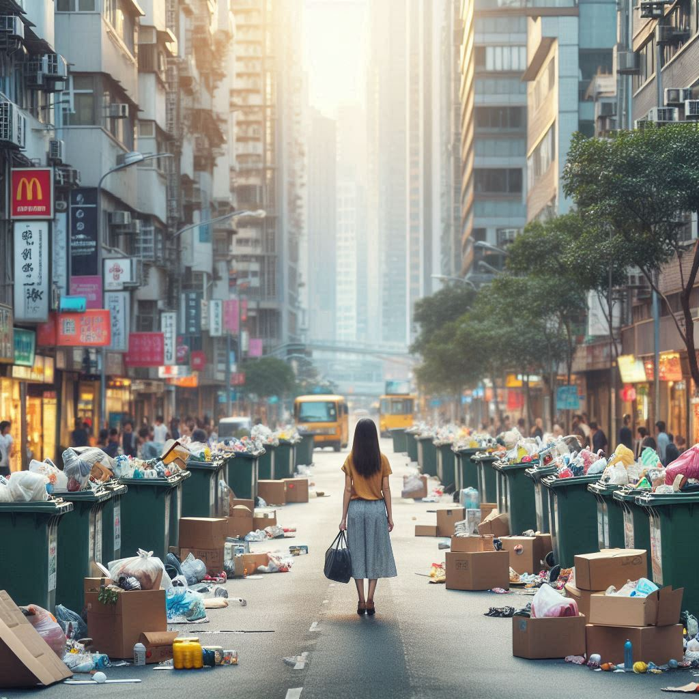
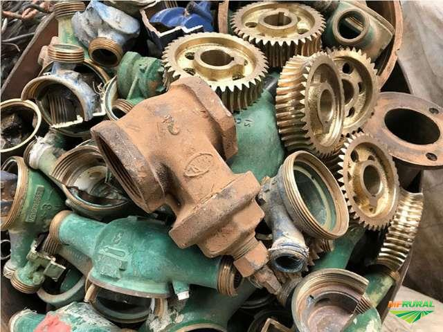
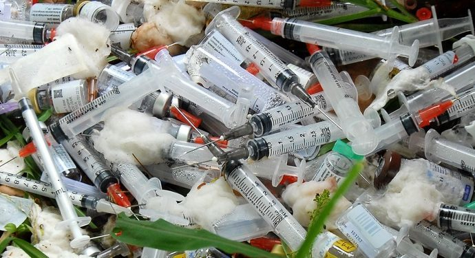
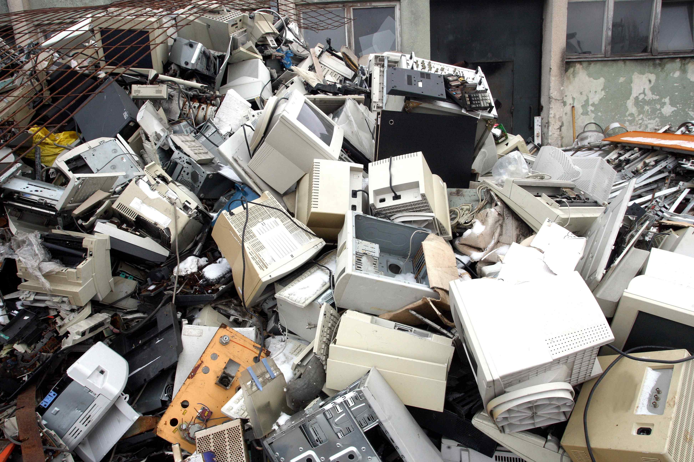

Lixos Recicláveis
Todo Lixo Tratável
- Lixo orgânico 
- Lixo reciclável 
- Lixo doméstico 
- Lixo comercial 
- Lixo industrial 
- Lixo hospitalar 
-
Lixo verde

- Lixo eletrônico 
Listas Não Recicláveis
Todo Lixo Não Tratável Usualmente
- Lixo hospitalar
- Lixo radioativo